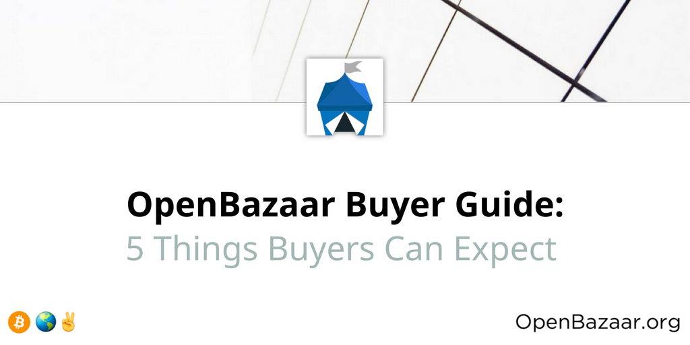

You’re looking to buy on OpenBazaar; welcome! This guide will help you know what to expect when you use the world’s most private, secure, and liberating online marketplace.
While OpenBazaar has some similarities to traditional ecommerce websites like eBay, Amazon or Etsy, this marketplace is a fundamentally different way to buy goods and services online.
First, it’s not a website at all, but software that you must download. This is necessary at this time because of how it allows users to connect to each other across the decentralized marketplace.
What does decentralized mean?

A decentralized marketplace gives users many advantages over other platforms: no marketplace fees, no data collection, and no censorship.
It also means you have all of your user information on your own computer. You aren’t trusting anyone else to control your money or trade. This is also referred to as a peer-to-peer (or P2P) network because users connect directly to each other and there are no big, centralized servers run by a single company, as with eBay, Amazon or Etsy.
Decentralization has many advantages, but there are trade-offs as well, and this guide is meant to equip buyers with realistic expectations about how OpenBazaar works and what they should expect. If you are used to making purchases through other e-commerce platforms and expect the same experience, we want to make sure you are not confused about what is going on, here!
Some parts of this guide will discuss the technical details to help explain why things work the way they do. If learning the details doesn’t interest you, feel free to skip those sections, which are labelled “More information.” Throughout this article I’ll be referring to your “user information,” which means the OpenBazaar program running on your computer and the data it contains for you.
Here are 5 things you need to know about when buying on OpenBazaar.
1) You are entirely responsible for all of your account and transaction data
Your user information exists nowhere but on your own computer. If your hard drive fails, or your computer is inaccessible for any reason, then you’ve lost the coins in your wallet or any active transactions.
That is, unless you’ve backed up your data! You need to backup this data as soon as you create your profile. This data needs to be backed up somewhere other than the drive your user information is located on, such as an external hard drive, otherwise the backup does you no good. Please note that this backup should be in a place that isn’t accessible to anyone else; with this backup someone else could take control of your user account.
There are two steps to backing up your user information. First, in the OpenBazaar client go into Menu > Settings > Advanced, then click “Show Seed.” Write down those words, in order, on a piece of paper, and keep it somewhere safe. This will allow you to recreate your OpenBazaar node ID and your wallet in case something goes wrong.
However, that seed will not recreate your listings or any open orders you had, so if you choose to create a store down the line, please refer to OpenBazaar Vendor Guide: What to Expect when Selling on The World’s Largest Decentralized Marketplace
2) Payment types are different – there are 3 types
There are three types of payments in OpenBazaar, and it’s important to understand how fees impact these payments:
- Direct payments
- Moderated payments
- Offline payments
Direct Payments
Direct payments are a buyer sending coins to the vendor and both parties are online. There is only one fee paid and the buyer pays it on top of the price of the item.
Moderated Payments
Moderated payments occur when the buyer selects a moderator and payment goes into escrow. There are two fees paid, one is paid by the buyer when they fund the escrow and the other is taken out of the total amount in escrow when funds are released. Assuming there isn’t a dispute and funds are released to the vendor, then effectively the vendor has paid the second fee, since they receive the total in the escrow minus the cost of the fee.
Here’s an example: let’s say you want to buy a painting for $100. You choose a moderated payment and pay $100 plus a $1.50 fee (network fees vary) that goes to the coin miners. The $100 are now securely in the escrow. The vendor ships your painting and when you receive it and are happy with it, you release the funds. Since they shipped the painting coin fees have increased slightly, so when funds were released to the vendor a $1.75 fee was taken out of the total $100 and they will receive $98.25 in their wallet.
Two out of three parties are always needed to release funds from a moderated order, so if one of the parties goes unresponsive and doesn’t release funds then the other party will be forced to open a dispute with the moderator. A moderator will charge a fee (which comes out of the total escrowed funds) to close a dispute, so it’s in both parties interest to be responsive and not abandon orders.
Offline Payments
There is a third type of payment: Offline payments. These happen when the vendor is offline. If the buyer makes a moderated payment to an offline vendor then it acts the same as a regular moderated payment. If the buyer makes a direct payment to an offline vendor, then the funds are put into a temporary escrow account that either buyer or vendor can pull from. If the vendor comes back online they can either accept or reject the offline order. If they accept and fulfil the order, then they receive the payment and receive the funds minus a coin fee. If the vendor never comes back online (or they reject the offline order when they come back online), then the buyer pulls the funds back, and they receive the funds minus a coin fee. Doing an offline payment means one party will be paying an extra coin fee, so it’s better for the vendor to be online for orders if possible.
3) Transaction flow is different
Though buyers can choose to fund their internal OpenBazaar wallet with a variety of coins as supported by Shapeshift, all orders on OpenBazaar are still settled in one of 3 cryptocurrencies that each user chooses upon setup: Bitcoin, Bitcoin Cash or Zcash.
Using this wallet is straightforward, but there are a few areas that could confuse you.
First, when you click “Buy Now” to initiate your checkout of an item the vendor will get an alert that you have begun checkout. No funds are moved at this stage, you must then click “Pay” to continue funding & placing an order. If you do not and change your mind you can still leave at this time but the vendor will have an alert that you started and may reach out to see if they can help or answer any questions.
If you do continue and pay for the order it may take a bit for the vendor to see it on the respective coin network. They will often need to wait for one confirmation on the coin payment before it displays as funded. If you choose to pay a low coin fee and / or there is congestion on the respective coin network, the process of confirmation could take up to several hours.
If you are uncertain about anything with your order remember that you can message the vendor within the app and chat with them. They’re real people too and they are generally happy to work with you!
4) Communication between users isn’t always happening in real time
On that note, messages work a little differently in a p2p application. First, remember that OpenBazaar users are individuals located all around the world and a vendor you would like to buy from may be in a very different time zone.
Second, because this is a P2P network where users are trying to communicate directly with each other’s computers, many users’ computers and networks aren’t configured to allow this properly. As a result, messages can be delayed, sometimes significantly.
What this looks like in OpenBazaar is an order being placed by a buyer, but a vendor maybe not seeing the order for another hour or so. Or the same delay happening with chat messages. This confuses both parties who expect the messages to arrive immediately. It’s important to note that the messages aren’t lost; they are being hosted on the network (in something called a distributed hash table or DHT) but the receiving node won’t know about them for a little while.
More information
This is happening because many users’ networks are set up to only make outgoing connections, so they are able to connect out to someone but they aren’t able to accept incoming connections. This means that other computers can’t send your computer a message directly. OpenBazaar still works without accepting incoming connections, but the messages won’t be received in real time unless you accept incoming connections.
Fixing delays in messaging
There are a few ways to improve messaging. The best way is to do something called port forwarding. Setting up port forwarding allows you to receive messages from the OpenBazaar network in real time. There’s only one port you need to forward:
Port 4001, TCP
This is done by going into your router settings. Google “How to port forward” if you need help. You may also need to add an exception to your firewall to accomplish the same goal. You can check if you’ve successfully opened the port by using this tool and entering port 4001 in the “Port to check” field.
If you’re unable to port forward, don’t worry – OpenBazaar will still work for you. But you will need to be aware that orders and chat messages will be delayed.
If you are made aware of a messaging issue that continues, make sure that both you and the vendor have up to date versions of OpenBazaar, you’ve both restarted OpenBazaar and you’ve waited at least one hour. Many times the problem is the buyer’s message wasn’t sent properly the first time and a restart should send a new message.
4) OpenBazaar imposes no marketplace fees–but each coin network may have transaction fees
One part of cryptocurrencies that can be confusing is the network fees. In order to send a cryptocurrency payment on any network, you need to include a fee. Fees go to coin miners who are securing the network and making sure transactions aren’t fraudulent. These fees vary based on how many other people are trying to send coins at the moment. Fees are often less than $1, but in some cases, like with the Bitcoin network, they can also be over $1 or even $3 to $5 at times.
More information
Your coin network fee also depends on how many inputs are needed to make the transaction. If you only have one input then the fee will be lower, but if you create a transaction with multiple inputs then the fee will be higher, sometimes much higher. By default you won’t use multiple inputs, but if you’ve made a lot of transactions your wallet with have several small change outputs, and of those are combined to make a new input then the fees will be higher.
You can partially control how much you want to pay in fees by determining how fast you want the payment to be confirmed by the network. If you want it confirmed as soon as possible (usually less than ten minutes) then you will choose a Priority fee. If you don’t mind waiting a half hour or so, then you can choose a Normal fee. If you don’t mind confirmation taking a few hours, you can choose the Economic fee. You can change your fee settings by going into Menu > Settings > Advanced, choosing your fee and pressing Save.
5) OpenBazaar is still a niche community
OpenBazaar is a new and growing network populated by lots of great people who are looking to have more control over how they buy and sell online. If you are not seeing things that you would like to buy with your bitcoin and other cryptocurrencies, reach out to vendors on the network and to other community members through social media to see if they can help!
This space is going to grow the most at first because of the relationships we have and how we use the network and tell others about it. If there’s something that you think would be helpful to this end that we can provide, please let us know!
Questions or concerns?
If you have problems along the way please visit our Support page for different ways to get the help you need and join the OpenBazaar community.
Ready to get started?
Download OpenBazaar now!
Do you want to help build this with us?
Download OpenBazaar right now to get buying or selling in minutes or join us on Github to contribute to the development of this open-source project!
Recent updates
Valuing Privacy & still Getting Data from a Decentralized Network
Facebook knows exactly how many users are on their platform. Amazon knows exactly how many products are sold. Instagram knows exactly how many photos are shared.
What Do Moderators & Moderated Payments Do on OpenBazaar?
Decentralizing ecommerce is an important part of the future we believe in. We are working to build a world with greater access to global commerce and more opportunities for people everywhere to build the lives they want. We believe this...
Cryptocurrency Trading Now Available on OpenBazaar
OpenBazaar version 2.2.0 was released today. For the full list of new features and improvements in this release, check out the release notes at the end of the post.
OpenBazaar 2018 Roadmap Community Call Agenda
We are looking forward to seeing you this Thursday, April 26th at 11am EST to discuss the 2018 development roadmap and determine some priorities together as a community! Since we are expecting quite a few attendees, we want to share...